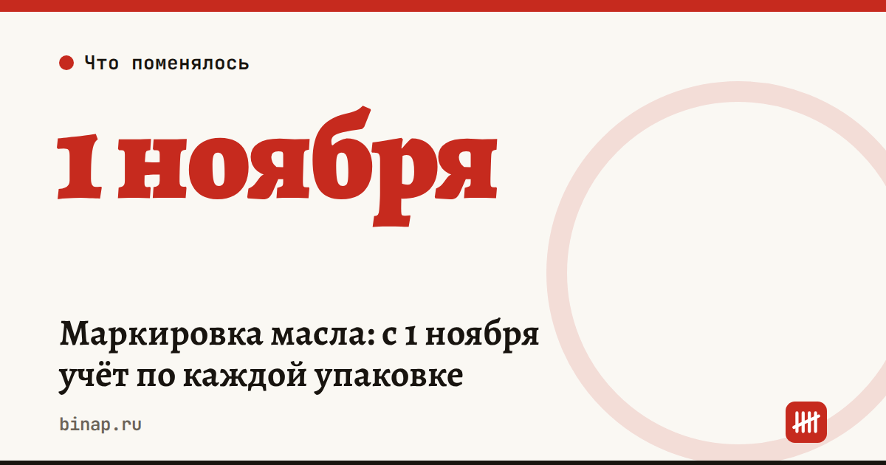

Маркировка масла: с 1 ноября учёт по каждой упаковке

С 1 ноября 2026 года масло переходит на поэкземплярный учёт. Вместо GTIN и количества в УПД и при выводе из оборота нужно будет передавать коды маркировки каждой упаковки. Правило касается масла, произведённого с 1 ноября.
Как шла маркировка (постановление Правительства от 27.05.2024 № 676): - с 1 октября 2024 года — маркировка масла в стекле и пластике у производителей и импортёров; - с 1 февраля 2025 года — в остальной упаковке; - с 1 ноября 2025 года — продажа через кассу с выводом кодов из оборота, обязательный ЭДО и объёмно-сортовой учёт: в документах GTIN и количество; - с 1 ноября 2026 года — поэкземплярный учёт: при отгрузке и приёмке в УПД все коды партии.
Кого касается. Всех, кто покупает и продаёт масло: оптовиков, магазины, продавцов на маркетплейсах. По данным Клерка, ещё и кафе, кондитерских и производителей косметики, которые берут масло как сырьё.
Чем грозят ошибки (по данным Клерка): - продажа масла без маркировки — для компании 50–300 тыс. ₽ с конфискацией, для должностного лица 5–10 тыс. ₽ (ст. 15.12 КоАП); - нет регистрации в системе, не переданы сведения или сорваны сроки — для компании 50–100 тыс. ₽ (ст. 15.12.1 КоАП).
По тем же данным, маркировать не нужно масло, которое магазин сам фасует в торговом зале, и упаковки до 30 г нетто.
Что сделать до 1 ноября: 1. Зайдите в личный кабинет «Честного знака» и проверьте, что у вас подключена товарная группа «Растительные масла». 2. Спросите оператора ЭДО, умеет ли он передавать коды в УПД из вашей учётной программы. 3. Проверьте сканеры: они должны читать Data Matrix, а не только штрихкод. 4. Назначьте человека, который принимает УПД с кодами и разбирается с расхождениями. 5. Попросите поставщика прислать одну пробную поставку с кодами в УПД до 1 ноября.
Частые вопросы
Остатки, выпущенные до 1 ноября, тоже учитывать поштучно? Нет, новое требование касается масла, произведённого с 1 ноября 2026 года.
Что опаснее — штраф или отказ сети принять товар? По оценке автора Клерка, на практике отказ маркетплейса или сети принять поставку из-за ошибки в УПД обходится дороже штрафа.